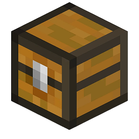
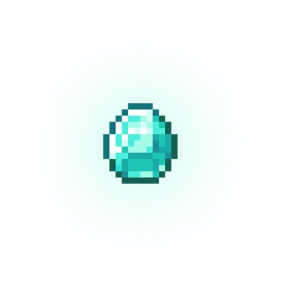

30 фриспинов
Стартовый пакет бросков кирки при первом заходе — без депозита, активируется автоматически.
Falling Pickaxe (фаллинг пикакс, «падающая кирка») — слот в стиле Майнкрафт: бросай кирку в шахту, ломай блоки, лови каскады и множители до ×5000. В Falling Pickaxe играть можно в браузере и в Telegram — на одном аккаунте, без установки. Здесь официальный вход, демо без регистрации и 30 фриспинов на старте.
Falling Pickaxe играть онлайн · демо без регистрации · механику поймёшь за минуту · 18+


Falling Pickaxe — instant-игра в стиле Майнкрафт (Minecraft), где падающая кирка разрушает блоки и добывает ресурсы. Кирка летит вниз по шахте, крошит камень, уголь, железо, золото и алмазы, а каждый разрушенный слой запускает каскад: блоки над ним падают, комбинации продолжаются, и множитель раунда растёт.
Чем глубже уходит кирка, тем дороже руда и тем выше пики. По пути встречаются TNT, которые взрывают целые пласты, сундуки с бонусами и апгрейды самой кирки — от деревянной до алмазной. Именно эта связка «каскады + апгрейды + множители» даёт максимум ×5000 ставки в удачных раундах.
Слот популярен в России как «падающая кирка» и «фаллинг пикакс»: узнаваемый pixel-визуал, простые правила и короткие раунды по 10–20 секунд. Играть можно с компьютера или телефона — в браузере и в Telegram-боте, без установки приложения.
В Falling Pickaxe нет барабанов и линий — есть шахта, кирка и физика падения. Каждый раунд кирка летит вниз и ломает всё, что попадает под удар. Выигрыш складывается из стоимости добытых блоков, умноженной на текущий множитель.

Стартовый пакет бросков кирки при первом заходе — без депозита, активируется автоматически.

Повышенные множители в пиковые часы: каскады с TNT и алмазной киркой дают максимальные заносы.
Регулярные акции и промокоды Falling Pickaxe на фриспины и бонус к первому пополнению.
Бонус на первый вход начисляется после регистрации, отыгрыш и вывод — в рублях. Условия акций смотри в игре и в Telegram-канале.
Нажми «Играть» — откроется официальный вход в игру в браузере или в Telegram
Выбери ставку — от минимальной в рублях, демо запускается на виртуальный баланс
Брось кирку — она ломает блоки каскадами, множитель растёт с глубиной
Забирай выигрыш и фриспины из сундуков — раунд длится 10–20 секунд
Начинать проще всего с демо: несколько бросков на виртуальный баланс показывают, как работают каскады и когда срабатывает TNT. Дальше — комфортная ставка и серия коротких раундов. Опытные игроки в Falling Pickaxe чаще ставят на апгрейд кирки до железной и алмазной: одно падение приносит больше блоков, а значит, больше каскадов и множителей.
Игра одинаково работает на компьютере и на телефоне: интерфейс адаптирован под вертикальный экран, кнопка броска — под большой палец. Аккаунт общий для веб-версии и Telegram-бота, так что баланс, фриспины и промокоды переносятся между ними.
Falling Pickaxe телеграм — отдельный способ входа: бот открывает ту же игру внутри мессенджера, без браузера и вкладок. Это удобно с телефона: ставка, бросок кирки и вывод выигрыша — в одном окне. В канале бота публикуются Falling Pickaxe промокод на фриспины, расписание пиковых часов с повышенными множителями и рабочее зеркало на случай, если основной адрес временно недоступен. Falling Pickaxe официальный сайт и Telegram-версия используют один баланс, поэтому переключаться между ними можно в любой момент.
Демо Falling Pickaxe — та же игра на виртуальный баланс: без регистрации, депозита и ограничений по времени. В демо доступны все механики — каскады, TNT, апгрейды кирки и сундуки, — поэтому это лучший способ понять «падающую кирку» перед игрой на деньги. Выигрыши в демо не выводятся.
Нажми «Играть демо» — откроется официальный вход в игру, где демо-режим включается одной кнопкой. Когда захочешь играть на реальные деньги, переключись в основной режим: 30 фриспинов на старте уже закреплены за аккаунтом.
30 ФРИСПИНОВ
Стартовый пакет бросков закреплён за тобой.
Забери его при первом заходе в Falling Pickaxe.